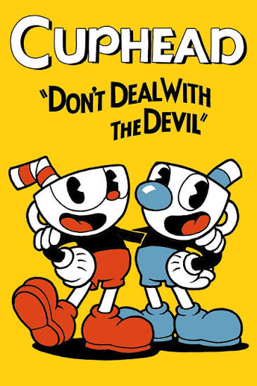
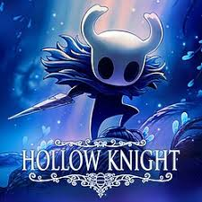
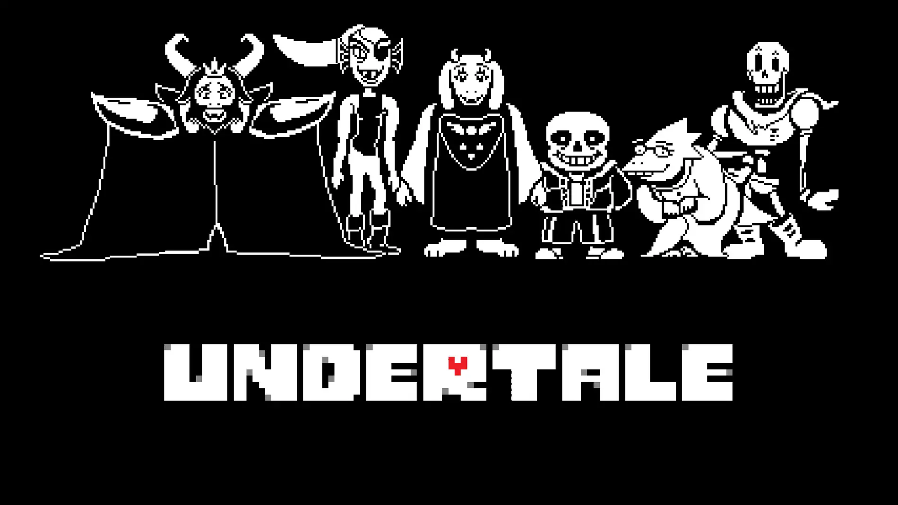

Los juegos indies son famosos por ser desarrollados por personas independientes de una empresa, y son reconocidos por ser en su grandísima mayoría increíbles títulos y obras maestras. Aquí hablaremos de los Indie games más reconocidos de la década pasada.


